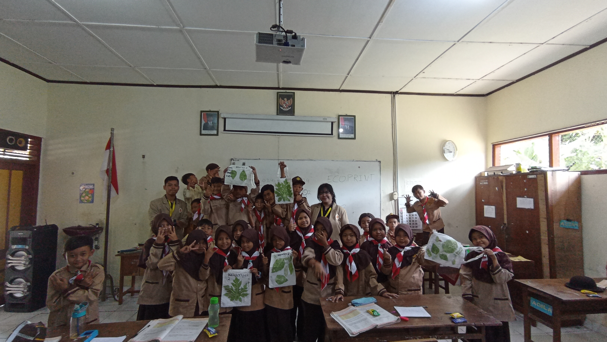

Daftar Program Kerja Subunit Tlogoadi
Edukasi budaya mencuci tangan pada anak SD di Tlogoadi Kecamatan Mlati
Edukasi Gizi Seimbang Pengganti 4 Sehat 5 Sempurna
Edukasi Makanan Gizi Seimbang untuk Anak-Anak SD melalui Minigame
Edukasi Pengenalan Fauna Indonesia kepada Siswa SDN Nglarang
Edukasi Pentingnya Menghemat Energi dan Sumber Daya kepada Murid Kelas 4 SD di SDN Nglarang
Lava Lamp: Praktik Penerapan Ilmu Sains pada Siswa Kelas 8 SMP Pamungkas Mlati
Membagikan Brosur Bijak Memilih untuk Anak SMA N 1 Mlati
Pelaksanaan Inventarisasi Pohon dan Penamaan Pohon di Embung Lampeyan
Pelatihan Input Produk UMKM ke Marketplace
Pelatihan Meronce untuk Anak SD dan SMP di Tlogoadi
Pelatihan Pemanfaatan Sampah Plastik melalui Pembuatan Kursi dengan Inovasi Ecobrick
Pelestarian Budaya Daerah bersama Warga Cebongan Kidul melalui Kirab Budaya
Pemasangan Poster Bijak Memilih Untuk Pemilih Muda di SMA
Pembuatan Booklet Mengenai Pentingnya Konsumsi Buah dan Sayur untuk Siswa TK di Desa Tlogoadi
Pembuatan Brochure Pengenalan Cagar Budaya
Pembuatan E-Booklet Dokumentasi Wisata Kuliner Area Tlogoadi dan Sekitarnya - Mlati
Pembuatan Infografis mengenai Embung Lampeyan Kalurahan Tlogoadi
Pembuatan Poster Bahaya Rokok untuk Murid SMA 1 Mlati
Pembuatan Poster Bijak Bermedia Sosial dan Pengenalan Python untuk SMA 1 Mlati
Pembuatan Poster Bijak Bermedia Sosial untuk SMA 1 Mlati
Pembuatan Poster Edukasi Cuci Tangan untuk Anak SD di Desa Tlogoadi
Pembuatan Poster Edukasi PHBS untuk Paud di Tlogoadi Kecamatan Mlati
Pembuatan Profil Objek Wisata Embung Lampeyan
Pembuatan Profil Padukuhan Cebongan Kidul
Penambahan serta Perlengkapan Sarana Pendidikan di PAUD
Pengadaan Poster Budaya Cuci Tangan untuk TK dan PAUD di Desa Tlogoadi
Pengajaran Bahasa Inggris kepada Anak-Anak Desa Tlogoadi
Pengajaran Calistung pada Anak-Anak Tlogoadi
Pengembangan Buku Cerita Pengelolaan Sampah Untuk Anak-Anak TK
Pengenalan Nilai Nasionalisme pada Anak Usia Dini melalui Video
Pengenalan Situs Penampungan Benda Cagar Budaya Mlati kepada Anak-Anak SD
Penginputan Produk UMKM ke dalam Marketplace
Pengukuran Kualitas Air di Lokasi Wisata Embung Lampeyan
Penyuluhan Anti Stunting untuk Ibu-Ibu di Desa Cebongan
Praktik Mencuci Tangan pada Anak TK di Tlogoadi sebagai Implementasi PHBS di Sekolah
Sosialisasi dan Kuis Mengenai Pentingnya Kesadaran Historis dan Kebudayaan sejak Dini ke Anak-Anak SD
Sosialisasi dan Praktik Menabung serta Manajemen Uang Saku pada Siswa SD
Sosialisasi Bijak Bermedia Sosial untuk Siswa SMP di Desa Tlogoadi
Sosialisasi Mitigasi Bencana untuk Anak SD di Kalurahan Tlogoadi Kecamatan Mlati
Sosialisasi Pemanfaatan Sampah Plastik melalui Pembuatan Kursi dengan Inovasi Ecobrick
Sosialisasi Pembuatan Ecoprint dengan Pemanfaatan Tanaman sekitar di SDN Nglarang
Sosialisasi Pencatatan Keuangan Sederhana pada Siswa SD
Sosialisasi Pengelolaan Sampah Organik Rumah Tangga melalui Budidaya Maggot
Sosialisasi Pengolahan Limbah Minyak Jelantah menjadi Lilin kepada Ibu-Ibu PKK Dusun Cebongan Kidul
Sosialisasi PHBS Konsumsi buah dan sayur untuk anak TK di Tlogoadi Kecamatan Mlati
Sosialisasi Waste Sorting dan Lomba Melukis Tempat Sampah untuk Anak SD di Desa Tlogoadi
Sosialisasi Pembuatan Ecoprint dengan Pemanfaatan Tanaman sekitar di SDN Nglarang
Oleh Daereo Dzakwan Putra
20/459085/KT/09250
Sosialisasi pengenalan pembuatan ecoprint kepada siswa Sekolah Dasar Negeri Nglarang dengan memanfaatkan tanaman sekitar yang berada di lingkungan sekolah.